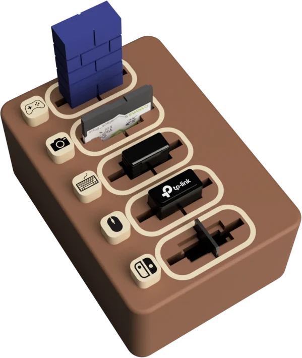
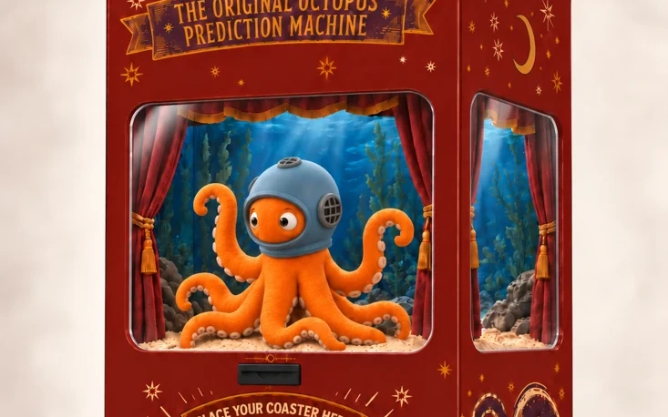
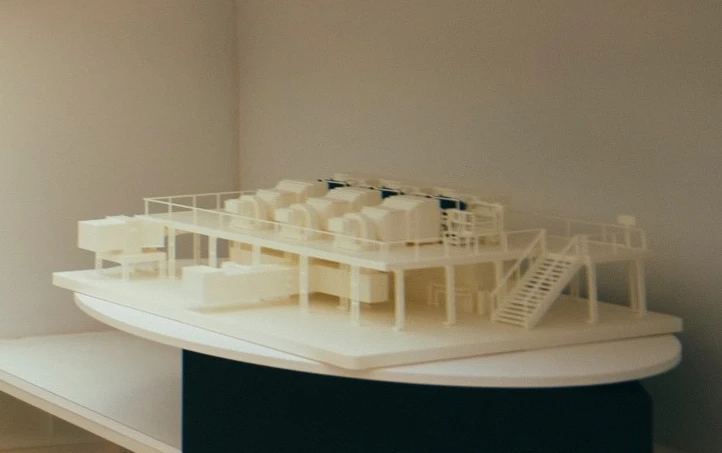

CAD · Mechanical prototyping
Cordify ↗
What if you could tidy up one end of a cable while the other stays plugged in?
Try the cable demo
Grandville, Michigan
Product Designer + Prototyper
I design and prototype physical products, with a soft spot for the small details that make everyday tech easier to use.
Selected work
What if you could tidy up one end of a cable while the other stays plugged in?
Try the cable demo

A five-slot organizer with a tactile click and swappable magnetic labels for USB receivers and memory cards.

A hands-on way to learn where PC components go.
Manufactured · Summer 2026

AI-assisted concept render
Facade artwork, brackets, and fit checks for an octopus prediction machine.

Adapting supplied CAD for 3D printing and assembly for the Aspen Ideas Festival.